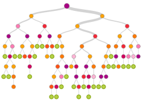
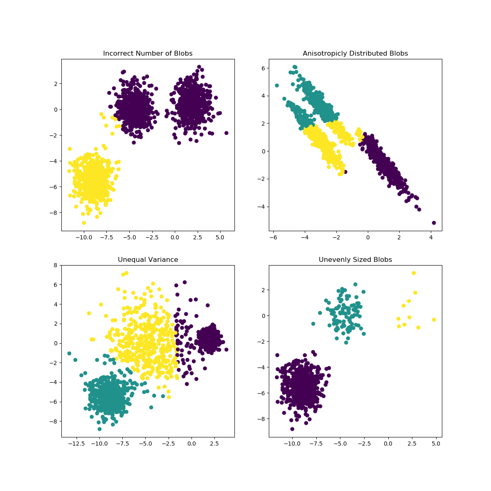

**CMSC422: Machine Learning**
!!! Tip
This is a live site for the ongoing Fall 2018 class
Welcome to CMSC422: Machine Learning!
It's an exciting time to study machine learning! This course is a broad overview of methods for machine learning and an introduction to adaptive systems. We will cover: supervised learning, unsupervised learning, learning theory, deep learning, and reinforcement learning.
*[Confused on a topic? Submit it here!](https://docs.google.com/forms/d/e/1FAIpQLSd-I8H_bdh2KUgTXDwxpd7WgC1J6eCTThu8uZavaqBileSk9A/viewform)*
# Announcements
- **10/01/18** [Problem Set 2](psets/pset02.pdf) has been posted! It will be due 10/15 at 11:59PM.
- **09/22/18** [Project 2](projects/clustering-pca.html) has been posted! It will be due 10/15 at 11:59PM.
- **09/16/18** Submit your Project 1 code on ELMS. See [Project 1](projects/decision-trees.html) for details
- **09/03/18** [Project 1](projects/decision-trees.html) parts b and c have been released!
- **08/29/18** [Problem Set 1](psets/pset01.pdf) has been posted! It will be due 9/17 at 11:59PM.
- **08/29/18** [Project 1](projects/decision-trees.html) has been posted! The second portion of the project will be released by 9/3. It will be due 9/17 at 11:59PM.
- **08/28/18** [Project 0](projects/setup.html) has been posted! This will not be turned in for a grade.
- **08/25/18** We look forward to meeting you on Monday 8/27 at 3:30pm!
# Projects
The projects for the course are linked below.
[Setup](projects/setup.html)
:
Set up the environment necessary on your computer to complete the projects in this class.
[Decision Trees](projects/decision-trees.html)

:
Implement your own decision tree algorithm and use it for inference on a real-life titanic dataset.
[Clustering and PCA](projects/clustering-pca.html)

:
Implement K-means clustering and PCA and use these algorithms on a real-life dataset.
# Problem Sets
Please write or type your answers on a separate document and export into PDF form. See [assignment details](#assignments) for submission information.
- [Problem Set 01](psets/pset01.pdf)
- [Problem Set 02](psets/pset02.pdf)
# Lecture
**Please check the class Piazza for the latest slides.** The following list of lectures is not guaranteed to be up to date.
Mon 27 Aug 2018: Welcome
- [**Lecture slides**](https://piazza-resources.s3.amazonaws.com/jl2b00mpen3au/jlcu3erfdj9456/CMSC422Introduction.pdf)
- Class objectives
- Why ML now
- Applications
- Syllabus
- Review [Math4ML](http://users.umiacs.umd.edu/~hal/courses/2013S_ML/math4ml.pdf)
Wed 29 Aug 2018: Decision Trees I
- [**Lecture slides**](https://d1b10bmlvqabco.cloudfront.net/attach/jl2b00mpen3au/jl2b0jnvzgn3hf/jlfoziomqhb1/CMSC422DecisionTreesI.pdf)
- Heuristic search
- Entropy
- ID3
- Inductive bias
- Occam's razor
- Overfitting
Wed 5 September 2018: Decision Trees II
- [**Lecture slides**](https://d1b10bmlvqabco.cloudfront.net/attach/jl2b00mpen3au/jl2b0jnvzgn3hf/jlqr8gv463x/CMSC422DecisionTrees2.pdf)
Mon 10 September 2018: KNN and Clustering
- [**Lecture slides**](https://d1b10bmlvqabco.cloudfront.net/attach/jl2b00mpen3au/jl2b0jnvzgn3hf/jlwwhq9hpwaa/CMSC422KNNClustering.pdf)
- Unsupervised learning
- K-nearest-neighbors
- Distance metrics (l1, l2, max norm)
- Voronoi diagrams
- Computational geometry
- Decision boundaries
- Epsilon ball nearest-neighbors
- Weighted voting
- Curse of dimensionality
- Hierarchical clustering
Wed 12 September 2018: Augmenting Human Decisionmaking *(Optional)*
- [**Lecture slides**](https://d1b10bmlvqabco.cloudfront.net/attach/jl2b00mpen3au/jl2b0jnvzgn3hf/jlzztlu8n4wl/REGLI_UMDNew_Type_of_Thinkingfor_Turing.pdf)
- [Archived video](https://www.youtube.com/watch?v=8gVMTcPxsYU)
- Personal bio
- UMD ISR
- Case study: manufacturing
- New relationship with data
- Limitless computing
- DARPA
Mon 17 September 2018: Kalman Filters and Linear Regression
- [**Lecture slides**](https://d1b10bmlvqabco.cloudfront.net/attach/jl2b00mpen3au/jl2b0jnvzgn3hf/jm714nrqm4az/CMSC422RegressionKalman.pdf)
- [Introduction to Kalman Filter](https://www.cs.unc.edu/~welch/media/pdf/kalman_intro.pdf)
- [Visual Tutorial to Kalman Filter](https://www.bzarg.com/p/how-a-kalman-filter-works-in-pictures/)
- [Visual Demo of Kalman Filter](https://youtu.be/Jq8HcIar68Y?t=5m35s)
- Linear regression
- Least squares
- Loss surface
- Multivariate regression
- Non-linear basis functions
- Kalman filter
- Prediction-correction cycle
Wed 19 September 2018: Principal Component Analysis
- [**Lecture slides**](https://d1b10bmlvqabco.cloudfront.net/attach/jl2b00mpen3au/jl2b0jnvzgn3hf/jmbcujx4jc70/CMSC422HomworkReviewPCA.pdf)
- [PCA Tutorial](https://d1b10bmlvqabco.cloudfront.net/attach/jl2b00mpen3au/jl2b0jnvzgn3hf/jmbcvr57rstu/principal_components.pdf)
- [Short PCA Primer](https://d1b10bmlvqabco.cloudfront.net/attach/jl2b00mpen3au/jl2b0jnvzgn3hf/jmbcvykxqtof/pcaprimer.pdf)
- Dimensionality reduction
- Principal components
- Eigenvalue interpretation
- Hyperparameter (k)
- Eigenfaces
Mon 24 September 2018: Review
- [**Lecture slides**](https://d1b10bmlvqabco.cloudfront.net/attach/jl2b00mpen3au/jl2b0jnvzgn3hf/jmhwxlt4hdgk/CMSC422ExamReviewHmwk2.pdf)
- KNN
- Clustering
- Information gain
- Entropy
- Hierarchical clustering
- Kalman Filter
- PCA
- Linear regression
- Decision trees
- Hypothesis space
- Bias/variance
- Ethics
# Course Information
## Time and Location
MW 3:30pm - 4:45pm, [ESJ 2204](https://esj.umd.edu/)
## Office Hours
!!! Warning Kevin's office hours will be cancelled this week due to travel
Name | Day | Time | Location | Email |
-----------------|------------------|-------------------|---------------|-----------------------|
William Regli | Wednesday | 2:00pm - 3:30pm | 2173 AVW | regli@cs.umd.edu |
John Kanu | Friday | 10:00am - 12:00pm | 4101/4103 AVW | john.d.kanu@gmail.com |
Jason Fan | Tuesday/Thursday | 9:45am - 10:45am | 4101/4103 AVW | jasonfan@cs.umd.edu |
Kevin Chen | Friday | 12:00pm - 2:00pm | 3164 AVW | kev@umd.edu |
## Course Materials
- Maryland students: [Piazza](http://piazza.com/umd/fall2018/cmsc422)
- [A Course in Machine Learning, Hal Daumé III](http://ciml.info/)
# Logistics
## Prerequisites
Students are expected to have the following background::
- CMSC320: Introduction to Data Science
- MATH240 or MATH461: Introduction to Linear Algebra
- CMSC330: Organization of Programming Languages
- CMSC351: Introduction to algorithms
## Grading
There will be *five* assignments, *two* midterms, and *one* final.
## Assignments
Assignments must be submitted through the class [Gradescope](https://gradescope.com). Use the code 9ZZKKR to sign up for the course.
## No Late Assignments
The instructors and the teaching assistants reserve the right to not accept late homework. Homework problems may be reviewed in the class in which they are due, rendering late homework unacceptable as the answers are then given.
## Honor Code
We encourage students to form study groups, but each student must independently work on their own solutions without referencing information from another student or outside source.